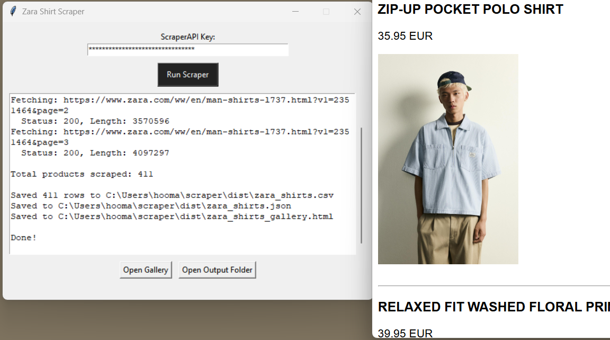
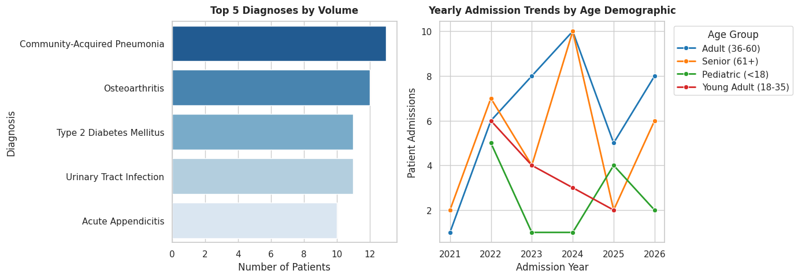
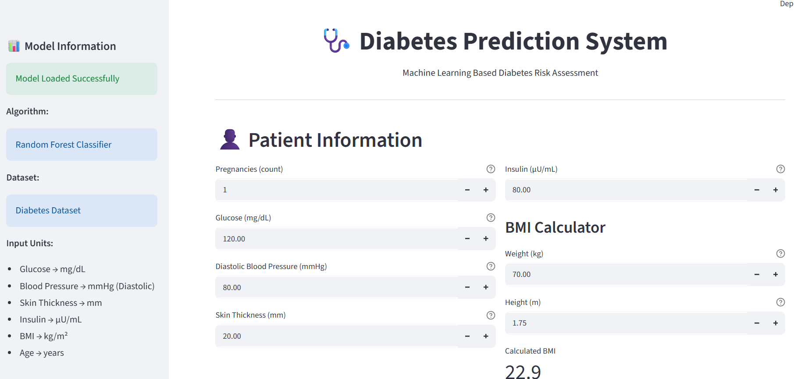
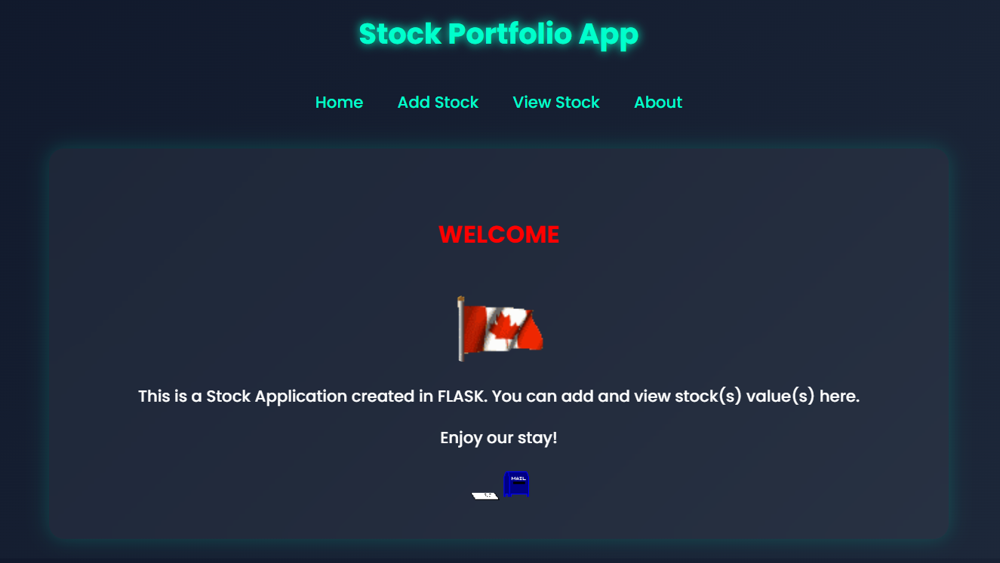
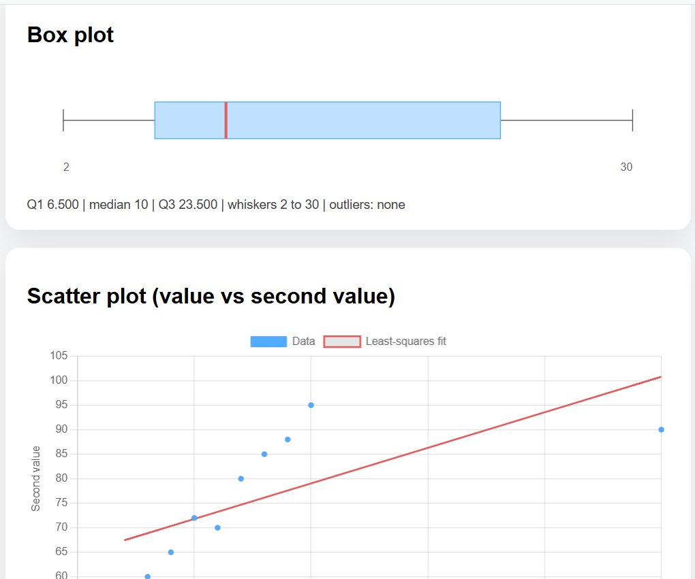

My Projects

Zara-Scraper
A Python notebook that scrapes men's shirt listings from Zara (name, price, and product image) and exports the results to CSV, JSON, and an HTML gallery.
View Project
Payment Funnel Analysis
This project analyzes payment funnel dynamics and checkout friction for enterprise B2B SaaS subscriptions. Key friction points include uninitiated checkout workflows (48.0% drop-off), payment widget abandonment (14.0% drop-off), and payment processing errors (8.0% directly stuck in error)
View Project
Healthcare Analytics & Data Pipeline (Hex Workspace)
This project provides an end-to-end data pipeline and analytical suite for a synthetic healthcare dataset, it covers data cleaning, deduplication, schema standardization, and SQL/Python analytical queries
View Project
Diabetes Prediction System
A machine learning web application that predicts the risk of diabetes based on patient health metrics. Built with Streamlit and a Random Forest Classifier trained on the Pima Indians Diabetes dataset.
View Project
Stocks Portfolio
A simple Flask web application for tracking stock purchases. Users can add stocks by entering a symbol, number of shares, and purchase price, then view them in a portfolio table.
View Project
Data Dashboard (Spring Boot + MySQL)
A full-stack web app for entering or uploading numeric data and exploring it with descriptive statistics and charts.
View Project